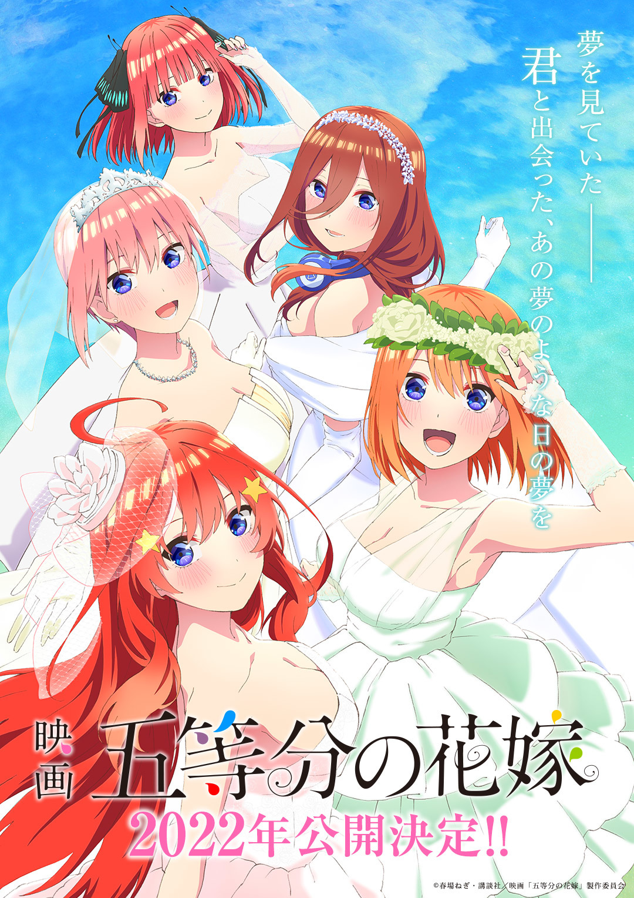
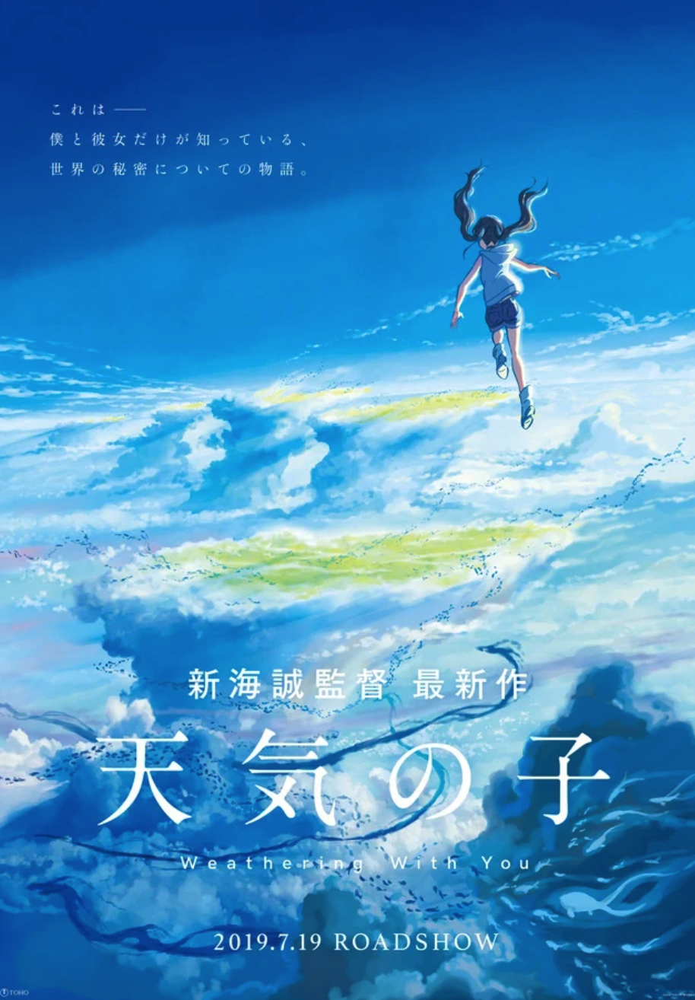
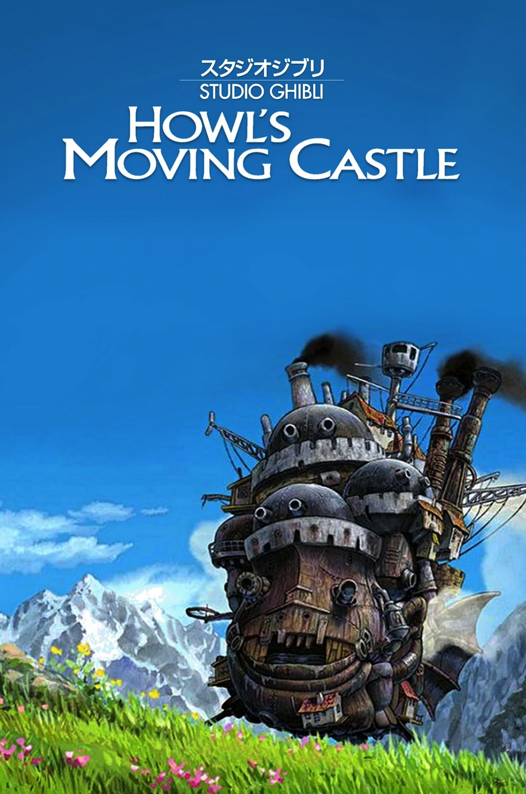

When a grade school student with impaired hearing is bullied mercilessly, she transfers to another school. Years later, one of her former tormentors sets out to make amends.

The Quintessential Quintuplets: The Movie
Futaro has led the five quintuplets to the point where they can graduate and pursue their own dreams. Now, at last, they have reached their final school festival. Having resolved to make this occasion something they will never regret, Futaro searches for his feelings for the five girls. He asks them to meet him in the classroom so that he can give them his answer…

Weathering With You
Set during a period of exceptionally rainy weather, high-school boy Hodaka Morishima runs away from his troubled rural home to Tokyo and befriends an orphan girl who can manipulate the weather.

Howl's Moving Castle
Sophie (Emily Mortimer) has an uneventful life at her late father's hat shop, but all that changes when she befriends wizard Howl (Christian Bale), who lives in a magical flying castle. However, the evil Witch of Waste (Lauren Bacall) takes issue with their budding relationship and casts a spell on young Sophie, which ages her prematurely. Now Howl must use all his magical talents to battle the jealous hag and return Sophie to her former youth and beauty.
Fate/Stay Night: Heaven's Feel
High school student Shirou finds himself at the centre of an ancient war between wizards to claim a magical artefact.